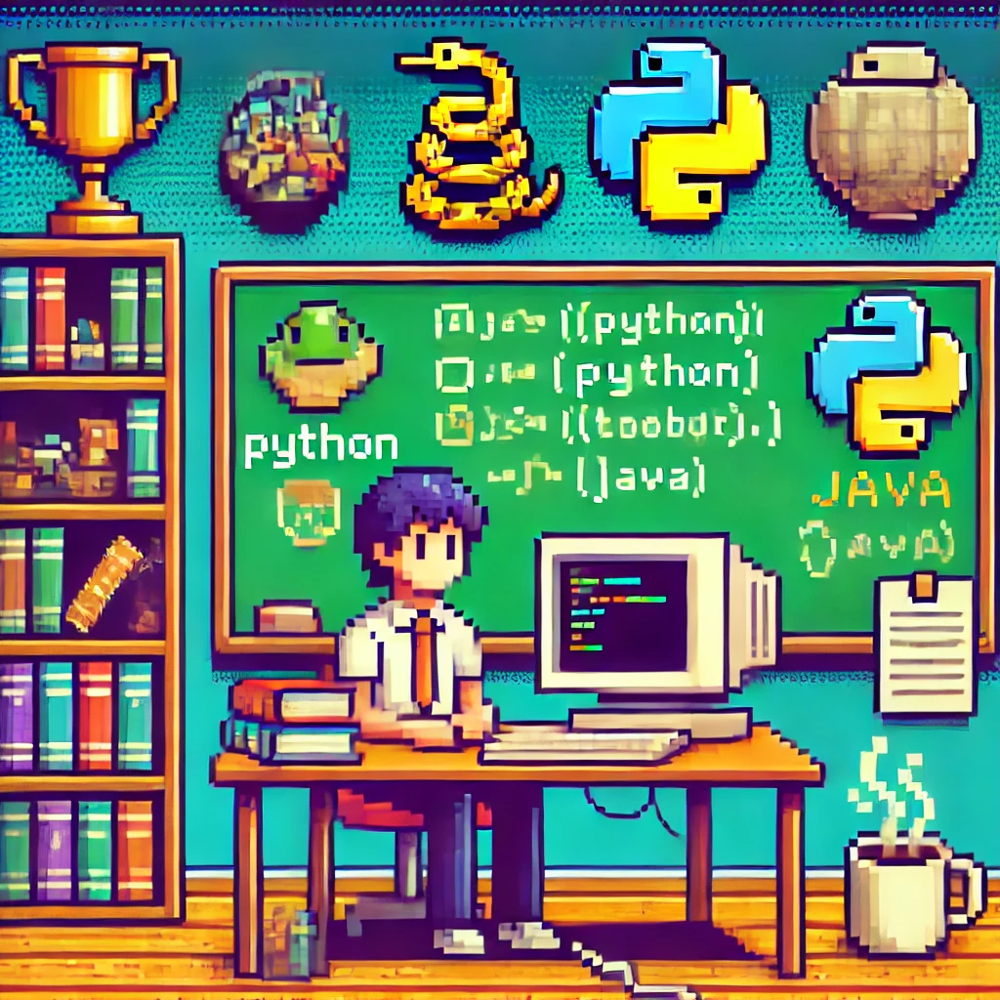
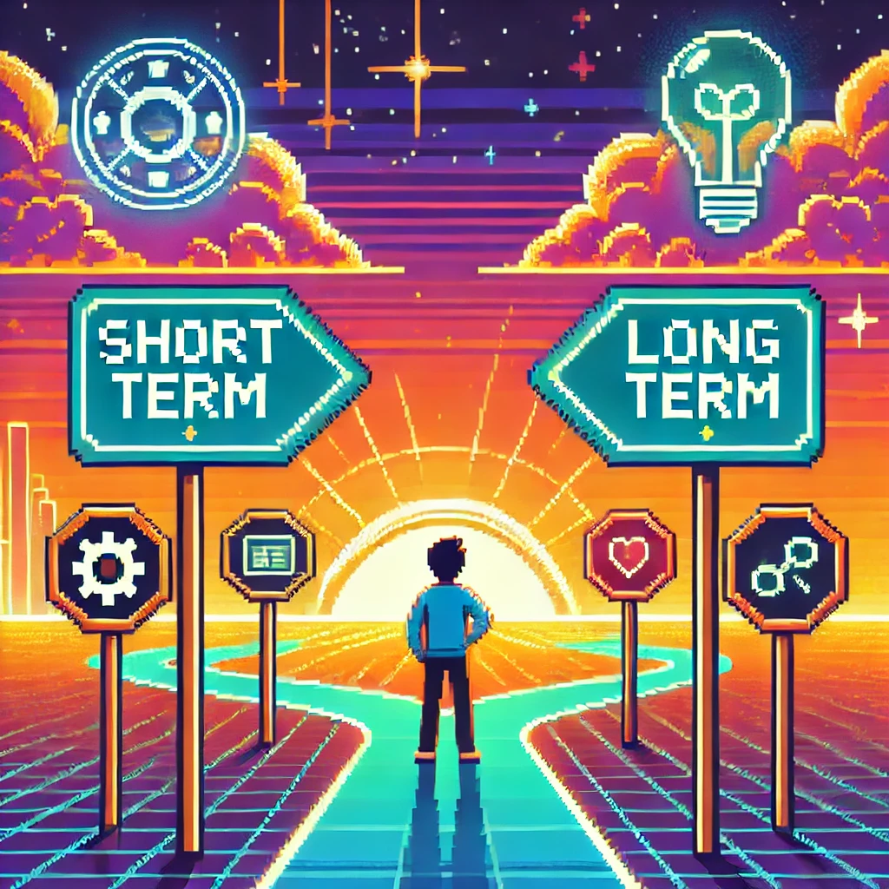

Mon Bilan Personnel

Parcours Académique
▼BTS SIO
- Mon parcours académique des deux dernières années m’a permis d’acquérir des compétences solides et d’approfondir mes connaissances dans mon domaine.
- Après l’obtention de mon baccalauréat, j’ai connu une interruption de deux ans dans mes études.
- La poursuite de ce bts a représenté un véritable défi nécessitant une grande détermination et une forte capacité d’adaptation.

Expérience Professionnelle
▼Renault DLPA
- En tant qu'alternant, j'ai eu l'opportunité de :
- Mettre en pratique mes connaissances,
- Développer de nouvelles compétences dans un environnement professionnel exigeant.
- Cependant, cette expérience n’a pas été sans difficultés :
- On m’a souvent confié une grande charge de travail, me poussant à dépasser mes limites.
- Les retours positifs et les félicitations de mes collègues et supérieurs m’aident à :
- Prendre confiance en moi,
- Surmonter progressivement le syndrome de l’imposteur.
- Chaque reconnaissance renforce ma motivation et me confirme que je suis sur la bonne voie.

hardskills
▼Langages & Outils
- front end
- backend
- base de données
en entreprises
- Analyse de données
- Gestion de projet
- Travail en équipe
- brainstroming/resonnement
Softskills
▼Compétences acquises
- Communication
- Gestion du stress
- Adaptabilité
- Curiosité
- Travail en équipe
- Esprit critique

Objectifs Futurs
▼Court Terme
- Validation du BTS SIO
- Développement de nouvelles compétences et renforcement de celle fraichement acquise
Long Terme
- évoluer en alternance sur le reste de mes etudes
- Spécialisation technique
- Intégrer une entreprise qui correspond à mes valeurs et qui innove de manière éthique.